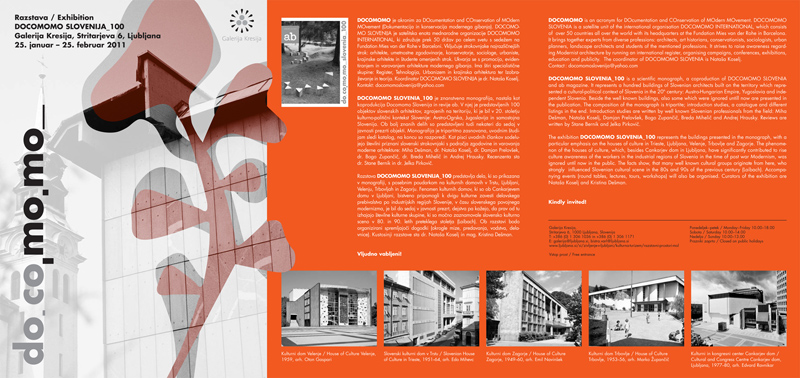

Docomomo 2020
http://www.docomomo2020.com/Metamorphosis. The Continuity of Change.
15IDC Conference proceedings
Discussion on Plečnik in Villa Prelovšek
Discussion with Alexander Tzonis and Liane Lefaivre by Nataša Koselj
Student Workshop 2018
DOCOMOMO Student Workshop, Ljubljana 24-28 August 2018
Hiša EU kot pomemben objekt moderne arhitekturne zapuščine


Edvard Ravnikar - 110 let rojstva
Metamorfoze

Docomomo Slovenija organizira avgusta 2018 v Cankarjevem domu transdisciplinarno mednarodno znanstveno konferenco z naslovom Metamorfoze. Vljudno vabljeni k sodelovanju s svojim prispevkom! Prijave so odprte do 1. septembra 2017. Več na: docomomo2018.si
ARHITEKT MARKO ŠLAJMER (1927-1969)
V duhu časa slovenskega povojnega modernizma

V letu 2017, ko praznujemo okrogli obletnici Plečnikove smrti in Ravnikarjevega rojstva, mineva tudi 90 let od rojstva arhitekta Marka Šlajmerja, Ravnikarjevega diplomanta in asistenta, docenta na Fakulteti za arhitekturo v Ljubljani ter ustanovitelja in prvega direktorja Ljubljanskega urbanističnega zavoda (LUZ), ki je v pionirskem obdobju slovenskega povojnega modernizma, v 50. in 60. letih 20. stoletja, odigral izredno pomembno vlogo na področju arhitekture in urbanizma ter prostorske politike tistega časa. V duhu nove dobe, ki je v ospredje postavljala skrb za človeka, kolektivnost, odprtost napredku, svobodi, funkcionalnemu, racionalnemu, minimalnemu, poveličevala nove možnosti konstrukcijskih sredstev in tehnik, odpirala prostore svetlobi in naravi, so maloštevilna, a prav zato ikonoklastična dela arhitekta Marka Šlajmerja kakor luči napredka na poti nove dobe, ki se je prav takrat vzpostavljala.
Razstava prvič razpira arhiv Marka Šlajmerja in vabi k diskusiji.
Odprtje monografske razstave bo v ponedeljek, 23. januarja 2017, ob 20.00 uri.
Razstava bo odprta do 2. marca 2017. Vljudno vabljeni!
Postavitev razstave: Til Mlakar, Petja Ogrinc, Nik Solina Besedila: Urška Leban, Rok Primažič, Gaja Golob, Žan Plevnik, Zala Koleša, Tjaša Kogovšek, Nejc Puš, Klemen Banovec Zbiranje in analiza gradiva: Rok Primažič, Tim Mavrič, Urška Leban, Žan Plevnik, Gaja Golob, Eva Mavsar, Vesna Perovnik, Mako Primažič, Metka Lozej, Petra Colarič, Tanja Kožuh, Klemen Banovec, Tjaša Kogovšek, Zala Koleša, Dea Gombač, Nejc Puš, Marjan Gracar, vsi študentje arhitekture pri izbirnem predmetu Slovenska arhitektura 20. stoletja na Fakulteti za arhitekturo UL. Oblikovanje vabila in zloženke: Nataša Koselj Mentor in kurator razstave: doc. dr. Nataša Koselj, u.d.i.a.
Franc Novak “Arhitektura za bodočega človeka”
Vabimo vas na odprtje razstave avtojev Mete Kutin in Tomaža Ebenšpangeja. ki bo v četrtek, 18. septembra 2014, ob 20.00 v galeriji DESSA. Obenem vas vabimo na voden ogled s predavanjem, ki bo pred zaključkom razstave, v ponedeljek, 13. oktobra 2014, ob 19.00 v galeriji DESSA.
Oglejte si tudi zloženko.
Varstvo arhitekturne dediščine povojnega modernizma
Predstavitev raziskave o pomenu in izzivih varstva stanovanjskega kompleksa Ferantov vrt bo v četrtek, 15. maja 2014, ob 17. 30 uri v Vurnikovi predavalnici Fakultete za arhitekturo, Zoisova 12.
Rob in Metafora | Avtentični modernizem Edvarda Ravnikarja
Od 4. decembra 2012 do 4. januarja 2012 je v vetrolovu prizidka Fakultete za arhitekturo UL, na ogled razstava maket in fotografij detajlov arhitekturnih del Edvarda Ravnikarja z naslovom ROB IN METAFORA – AVTENTIČNI MODERNIZEM EDVARDA RAVNIKARJA. Razstava je postavljena ob 105. obletnici Ravnikarjevega rojstva. Ob razstavi je izšla tudi spremljajoča publikacija.
Vodja projekta je doc. dr. Nataša Koselj, avtorji posameznih projektnih nalog pa so študenti Fakultete za arhitekturo:Dominik Košak, Tadej Juranovič, Rok Božič, Tina Vilfan, Boris Omahen, Eva Rajšter, Miha Munda in Laura Mercina.
Projekt je realiziran ob podpori Ustanove Ivanšek, Fakultete za arhitekturo UL in Docomomo Slovenija.
Arhitektura Edvarda Ravnikarja je utemeljena na detajlu, zato je raziskovanje njegovih detajlov osnova za razumevanje njegove arhitekturne misli in njene nadgradnje. Naloga skupne študentov Fakultete za arhitekturo pri predmetu Slovenska arhitektura 20. stoletja je bila, da si izberejo značilen Ravnikarjev detajl in po njem izdelajo maketo. Makete detajlov so v različnih merilih, narejene iz mediapana, vse pa izražajo Ravnikarjevo inventivno dinamiko misli preseganja danega prostora in časa.
Vljudno vabljeni!
ARHITEKT DANILO FÜRST – 100 let rojstva

Monografska razstava – Festivalna dvorana Bled, 6. 4. 2012 – 6. 5. 2012
Ob stoti obletnici rojstva arhitekta Danila Fürsta, ki je umrl leta 2005 in je bil kot arhitekt aktiven praktično do svoje smrti, bi želeli osvetliti več zornih kotov v zgodovini slovenske arhitekture 20. stoletja. Plečnikovo šolo in njene značilnosti, ki so oblikovale najvidnejše predstavnike slovenskega modernizma, kot sta Edvard Ravnikar in Danilo Fürst; poudariti bi želeli Fürstovo blejsko obdobje, kjer je kot mestni arhitekt, pri petindvajsetih letih, zgradil zavidljiv arhitekturni opus; povojno obnovo, socialno gradnjo in začetke industrijske montažne gradnje, področje, na katerem je Fürst odigral vodilno vlogo in ga zato štejemo za pionirja montažne gradnje v Sloveniji ter obdobje po upokojitvi, ko je gradil tudi gorske koče in smučarske žičnice ter veliko del za cerkev.
Arhitekt Danilo Fürst je bil rojen leta 1912 v Mariboru. V svojem herkulejskem ustvarjalnem opusu je posegal na vsa področja arhitekturnega ustvarjanja – od vodenja društva arhitektov, soustanovitve revije Arhitekt, prek urbanizma in hortikulturnih ureditev, projektiranja stanovanj, šolskih, administrativnih, industrijskih objektov ter prizadevanja za uveljavitev montažne gradnje do oblikovanja pohištva.
Monografska predstavitev njegovega obširnega in pestrega ustvarjalnega opusa v Festivalni dvorani na Bledu, poudarja Fürstova dela na Gorenjskem ter predstavi vsa najpomembnejša dela njegovega opusa. Ob razstavi je na voljo tudi vodnik po Fürstovi arhitekturi na Gorenjskem v obliki zloženke, proti koncu razstave pa bo izšla tudi obširna monografija v slovenskem in angleškem jeziku, ki na več kot 300 straneh in s 300 fotografijami in načrti izčrpno prikazuje celoten arhitekturni opus Danila Fürsta.
Idejna zasnova, prostorski koncept in organizacija razstave sta bili v rokah Maje Šmid, avtorica razstave, vodnika in monografije je arhitektka doc. dr. Nataša Koselj. Pri razstavi so sodelovali tudi študenti arhitekture v okviru predmeta Slovenska arhitektura 20. Slovenia trip planner stoletja: Alja Čehovin, Matic Kržan, Jure Mihevc in Natalija Razpotnik. Večino fotografij, ki so predstavljene na razstavi je posnel fotograf Miran Kambič. Razstavo so omogočili: Občina Bled, Zavod za kulturo Bled, Gozdno gospodarstvo Bled in Talum Kidričevo. Kot partnerji pa sodelujejo: Fakulteta za arhitekturo UL, Muzej za arhitekturo in oblikovanje MAO in Docomomo Slovenija.
Razstavo bo v petek, 6. aprila ob 19. uri odprl župan občine Bled, gospod Janez Fajfar in bo na ogled v Festivalni dvorani Bled, od 6. 4. 2012 do 6. 5. 2012, med 11. in 19. uro.
Vljudno vabljeni! 